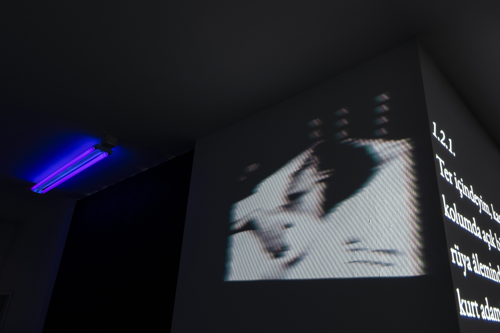

WRITING
Yokluğuna işaret ediyor
[Signals its absence]
essay, 2025
in Sanat Dünyamız 204: Arşiv ve İhtimam [Archives and Care]
lubunşah
short story, 2025
for Narrative Power Alliance: Exhibition
⚹︎ Betraying normalcy: Red lines, the big prison, and the long middle
essay, 2024
on K24
Kültür Sığınağına Yerleşmek
[Settling for the Culture Bunker]
essay, 2023
in Sanat Dünyamız 192: Kesişimsellik ve Sanat [Intersectionality and Art]
edible guts
poem, 2022
in On the Edge of Seeing, Sevil Tunaboylu
mâzîk
exhibition text, 2022
for mâzîk, Depo
⚹︎ Beyoğlu’nun yeni failleri
[Beyoğlu’s new perpetrators]
essay, 2022
on 1+1 Express, co-written with Eda Hisarlıoğlu
Eşikte Vücut Bulmak: Canavarın Queer Etiği
[Embodied at the Threshold: The Queer Ethics of Monstrosity]
essay, 2021
in Kaos GL 179: Zor Zamanlar [Difficult Times]
minor-K
essay, 2020
in On Celestial Bodies, Arter
Sweating Milk
poem, 2019
in Abstract Lies (Chapter 1), Huo Rf + Abdi Cadani
WORKS

Trou de loup [Wolf hole]
installation, 2023
solo exhibition at 5533, Istanbul
Trou de loup
video, 2022
part of The Hauntologists at BAK, Utrecht